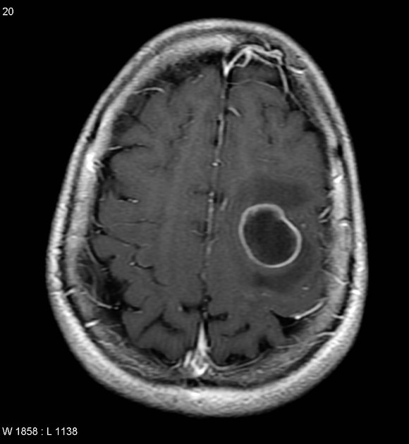
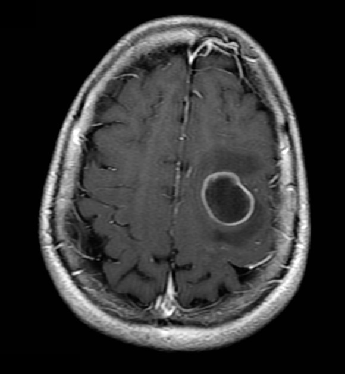

Aperçu du projet
v1.0 stablePixelMed est une application de bureau performante développée avec PyQt6, conçue pour aider les professionnels de santé dans l'analyse et le traitement d'images médicales bidimensionnelles (radiographies, clichés standard et fichiers DICOM). Elle implémente une architecture Modèle-Vue-Contrôleur (MVC) stricte et s'intègre avec une base de données PostgreSQL pour la gestion sécurisée des dossiers patients.
- Windows (10/11)
- macOS (26 Tahoe - Apple Silicon)
- Linux (Debian 13)
Avant de commencer
Avant d'appliquer les algorithmes à une image, essayez d'éliminer les zones de textes / annotations non souhaitées afin d'améliorer la qualité des résultats. Cela est possible grâce à l'explorateur de photos (Windows) ou Aperçu (macOS), mais aussi avec l'outil Stylo présenté dans la partie Annotations.
Exemple :

après élimination des annotations =>

Barre supérieure (Actions Globales)
La barre supérieure regroupe les fonctions d'importation et les outils de visualisation globale sur l'image active :
| Bouton | Action / Rôle | Fonctionnement détaillé |
|---|---|---|
| Import | Ouvrir un cliché | Ouvre l'explorateur natif pour charger un fichier local. Formats acceptés : .png et .dcm (DICOM). Les formats sont automatiquement normalisés. |
| Exporter | Enregistrer l'image traitée | Ouvre l'explorateur de fichiers pour enregistrer l'image en cours de traitement. |
| Loupe | Agrandir une partie de l'image | Active une loupe interactive au survol. Lors de l'activation, une boîte de dialogue demande à l'utilisateur de spécifier un facteur d'agrandissement dynamique (de x2.0 à x8.0). |
| Slider | Comparer l'image d'origine et l'image traitée | Sépare l'image en deux via une ligne verticale mobile. La partie à gauche affiche l'image originale non filtrée, tandis que la partie à droite présente l'image modifiée après traitement. Le séparateur peut être déplacé à la souris. |
| TFD 2D (Spectre) | Affiche la transformée de Fourier discrète 2D | Calcule la Transformée de Fourier Discrète 2D de l'image. Affiche son spectre de magnitude en échelle logarithmique 20 * log(|TFD| + 1) centré sur l'origine. |
| Histogramme | Affiche l'histogramme de l'image | Calcule et affiche l'histogramme des niveaux de gris de l'image. L'axe horizontal représente les intensités (0 à 255), tandis que l'axe vertical indique le nombre de pixels pour chaque niveau de gris. |
Filtres & Traitements d'image
Le panneau latéral gauche contient plusieurs modules de filtrage pour améliorer la lisibilité des radiographies :
Filtres :
Ce volet regroupe les opérations de filtrage spatial et fréquentiel :
| Filtre | Description technique | Interface & Dialogue |
|---|---|---|
| Image d'origine | Réinitialise l'affichage. Annule tous les filtres actifs pour restituer la matrice d'image initiale. | Application instantanée |
| Filtre Gaussien | Lissage spatial réduisant le bruit haute fréquence. Recommandé avant la détection de contours. | Popup Filtre Gaussien (Écart-type σ) |
| Sobel (Contours) | Détection de contours en calculant la magnitude des gradients horizontaux et verticaux. Normalise les gradients à 99%. | Automatique (Application directe) |
| Filtre Passe-Bas | Filtre fréquentiel idéal circulaire. Supprime les hautes fréquences au-delà du rayon spécifié, provoquant un flou uniforme. | Popup Filtre Passe-Bas (Rayon de coupure) |
| Filtre Passe-Haut | Filtre fréquentiel idéal circulaire inversé. Supprime les basses fréquences à l'intérieur du rayon spécifié, mettant en valeur les micro-textures et contours abrupts. | Popup Filtre Passe-Haut (Rayon de coupure) |
Contraste & Segmentation :
Indispensable pour faire ressortir les variations de densité tissulaire ou délimiter les structures anatomiques :
| Traitement | Description technique | Interface & Dialogue |
|---|---|---|
| CLAHE (Histogramme adaptatif) | Égalise localement l'histogramme de l'image sur une grille de tuiles pour rééquilibrer le contraste. | Popup Paramètres CLAHE (Clip Limit et Grille) |
| Contraste Manuel | Ajuste le gain de contraste par rapport à un gris moyen : Pixel = 0.5 + Facteur * (Pixel_base - 0.5). |
Slider en bas de l'écran (Facteur 1 à 10) |
| Seuillage (Binarisation) | Convertit le cliché en noir et blanc (binarisation) en fonction d'un seuil. | Popup Seuillage (Seuil, 0 = Otsu auto) |
| Segmentation Watershed | Sépare les régions connectées (ex: tumeurs) par algorithme géomorphologique de ligne de partage des eaux. | Popup Paramètres Watershed (Sigma, Seuil, Noyau, Dist) |
Impact détaillé des paramètres de réglage (Popups) :
Voici l'explication physique et clinique des paramètres réglables via les fenêtres de dialogue :
Gère la dimension du noyau de convolution pour le lissage spatial (0.1 à 100.0).
• Valeur faible (ex: 0.5 - 1.5) : Élimine le bruit à très haute fréquence (micro-bruit) tout en gardant les contours et les détails fins des structures osseuses bien nets.
• Valeur élevée (ex: 3.0 - 10.0+) : Floute fortement l'image. Utile pour éliminer le bruit important ou préparer l'image avant des segmentations complexes, au prix d'une perte des micro-structures.
Définit la taille de la zone de masque circulaire dans l'espace de Fourier (TFD 2D).
• Passe-Bas (Low-Pass) : Supprime le bruit au-delà du rayon. Un petit rayon produit un flou très important (seules les grandes structures subsistent). Un grand rayon préserve la netteté et la texture d'origine.
• Passe-Haut (High-Pass) : Supprime les basses fréquences à l'intérieur du rayon. Un petit rayon conserve l'allure générale en accentuant légèrement les contours. Un grand rayon élimine tout le fond homogène pour ne laisser apparaître que les transitions de forte intensité (rebords osseux abrupts).
Ajuste l'égalisation adaptative de l'histogramme par blocs.
• Limitation contraste (Clip Limit, 0.1 à 40.0) : Borne l'amplification. Une limitation forte fait ressortir des contrastes tissulaires infimes (ex: tissus mous vs air) mais peut fortement amplifier le bruit de fond. Une limitation faible produit un rendu plus doux et homogène.
• Taille de grille (Tile Grid, 2 à 128) : Divise l'image en n * n tuiles. Une grille fine (ex: 32x32, 64x64) améliore les détails très locaux mais peut générer des démarcations de blocs. Une grille plus large (ex: 8x8) homogénéise le contraste sur de grandes zones.
Permet de séparer les structures anatomiques connectées ou superposées.
• Sigma Gaussien : Prédébruite le gradient de relief. Un sigma élevé évite d'avoir une multitude de petites régions segmentées (sur-segmentation) mais atténue les bords.
• Seuil (Otsu ou manuel) : Définit le masque d'inondation global (les régions hors masque ne seront pas segmentées).
• Taille noyau : Dimension de l'élément structurant. Un noyau plus grand élimine les petites imperfections ou les isolements indésirables avant inondation.
• Min distance marqueurs : Distance minimale entre les germes de départ (sources d'inondation). Une distance trop faible divise les structures d'un seul bloc (sur-segmentation). Une distance trop grande peut fusionner deux objets distincts (ex: deux vertèbres ou deux poumons) en un unique label.
Outils de Mesure interactifs
Ces outils permettent de dessiner des repères et de calculer des mesures cliniques directement à l'écran par simple clic de souris :
| Outil | Nombre de Clics | Fonctionnement & Formule |
|---|---|---|
| Règle de distance | 2 points (A, B) | Calcule la distance euclidienne entre les deux points. Elle projette les coordonnées sur l'image d'origine pour rester insensible au zoom de la fenêtre, puis applique un calibrage physique. |
| Rapporteur d'angle | 4 points (A-B, C-D) | Forme deux droites séparées (droite AB et droite CD). Calcule l'angle aigu theta via le produit scalaire normalisé de leurs vecteurs directeurs. Affiche le résultat en degrés à l'intersection ou au barycentre. |
| Comparateur hauteur | 2 points (A, B) | Utile pour mesurer un décalage vertical (ex. bascule de bassin). Trace deux plans horizontaux passant par A et B, puis calcule et affiche l'écart vertical Delta y en centimètres. |
| Calcul air Watershed | Automatique | Après application de l'algorithme de segmentation Watershed à l'image pour identifier les régions distinctes, affiche l'aire en px^2 de chaque région (avec sa couleur). Utile pour analyser la structure interne d'une anomalie ou d'une zone d'intérêt. |
| ROI Cercle | 1 point (centre) + 1 point (rayon) | Permet de définir une région d'intérêt circulaire sur l'image. Calcule et affiche l'aire en px^2 de la région délimitée. Affiche également le niveau de gris moyen de la région. |
| ROI Rectangle | 2 points (diagonale) | Permet de définir une région d'intérêt rectangulaire sur l'image. Calcule et affiche l'aire en px^2 de la région délimitée. Affiche également le niveau de gris moyen de la région. |
| Pipette niveau de gris | 1 point (au survol) | Permet de mesurer le niveau de gris d'un pixel spécifique sur l'image. Affiche la valeur du niveau de gris à l'endroit où le point est cliqué. |
Annotations d'images
Le module d'annotations permet aux cliniciens de dessiner, d'ajouter des étiquettes textuelles et de marquer directement l'image médicale active pour documenter des observations cliniques ou des zones d'intérêt. Ce module est disponible dans le panneau latéral sous l'onglet Annotations :
| Outil | Action / Rôle | Fonctionnement détaillé & Raccourcis |
|---|---|---|
Stylo |
Tracé libre à main levée | Permet de dessiner des traits sur l'image en maintenant le clic gauche enfoncé. Utile pour entourer une anomalie, souligner une zone pathologique ou tracer des schémas explicatifs. Le tracé s'adapte dynamiquement à la résolution de l'image. |
Texte |
Ajout de texte dynamique | Cliquez sur l'image pour ouvrir une invite de saisie de texte. Le texte apparaît centré sur le point cliqué.
• Déplacement : En mode texte, survolez un texte existant (le curseur se change en flèches multidirectionnelles) pour le déplacer par glisser-déposer. • Sélection : Cliquer sur un texte l'entoure d'un cadre en pointillé bleu. • Suppression : Appuyez sur la touche Suppr ou Retour arrière pour effacer le texte sélectionné. |
Couleur |
Nuancier d'annotation | Ouvre le sélecteur de couleurs standard du système (QColorDialog). Permet de définir la couleur des nouveaux tracés libres et des nouvelles annotations de texte. La couleur actuelle s'affiche en fond du bouton. |
Effacer |
Suppression globale | Supprime instantanément tous les tracés au stylo et les zones de texte présents sur l'image pour réinitialiser le plan d'annotation. |
Exporter |
Sauvegarde des tracés | Permet d'exporter l'image contenant l'ensemble de ses annotations superposées sous forme de cliché fusionné. Peut être sauvegardé localement (PNG/JPEG) ou rattaché directement à la fiche du patient actif dans la base de données PostgreSQL. |
Gestion des Dossiers & Patients
PixelMed propose un gestionnaire de dossiers médicaux intégré connecté à une base de données PostgreSQL, disponible dans l'onglet Dossiers du menu gauche :
- Mode En Ligne (Online) : Synchronise la liste des patients, permet d'ajouter/supprimer des fiches patients et d'associer des clichés de radiographie directement en base de données.
- Mode Hors Ligne (Offline) : Si le serveur PostgreSQL est inaccessible, l'application bloque silencieusement les actions d'écriture en BDD et avertit l'utilisateur. Les fonctions de filtrage d'image locale restent pleinement opérationnelles.
Fonctionnalités du gestionnaire :
- Barre de recherche : Recherche instantanée à la saisie parmi les fiches patients stockées.
- Création d'un Patient : Formulaire comprenant le Nom, Prénom, Date de naissance (AAAA-MM-JJ), le Sexe (M/F) et un numéro d'identifiant hospitalier unique.
- Fiche d'informations : L'affichage d'un patient ouvre un panneau flottant détaillant sa fiche clinique.
- Radiographies sauvegardées : Liste tous les clichés affectés au patient actif. Un double-clic sur un élément de la liste charge instantanément l'image correspondante dans le visualiseur.
- Import et Sauvegarde : Le bouton "Sauver Radio" permet d'affecter l'image actuellement affichée au patient sélectionné.
Pour les développeurs
Cette section est destinée aux développeurs souhaitant contribuer au projet PixelMed ou personnaliser son fonctionnement.
Installation pour développeurs
Suivez les étapes ci-dessous pour installer l'environnement de développement de PixelMed.
Prérequis
| Composant | Version requise | Usage |
|---|---|---|
python | 3.9+ (3.12 conseillé) | Langage de programmation et exécution du projet |
PostgreSQL | 14+ | Moteur de base de données relationnelle |
pip | Dernière version | Gestionnaire de paquets Python |
Configuration de l'environnement virtuel (venv)
Placez-vous dans le répertoire du projet, puis exécutez les commandes correspondant à votre système d'exploitation :
Windows :python -m venv venv
.\venv\Scripts\activate
pip install -r requirements.txtpython3 -m venv venv
source venv/bin/activate
pip3 install -r requirements.txtDémarrage rapide
Une fois l'environnement activé et les dépendances installées, vous pouvez démarrer l'application principale via la ligne de commande :
Windows :python main.pypython3 main.pystyle.qss), puis affiche la fenêtre principale centrée à l'écran.
Architecture MVC
PixelMed suit une implémentation rigoureuse du patron d'architecture Modèle-Vue-Contrôleur (MVC) pour séparer les responsabilités :
- Models (
models/) : Gèrent l'état applicatif (MainModel.py) et encapsulent les traitements de calcul d'image (ex :TFD2D.py,CLAHE.py). Ils sont agnostiques de l'interface graphique. - Views (
views/) : Définissent l'IHM (MainView.py, les barres d'outils, les overlays de mesure). Elles affichent les données fournies et captent les interactions souris pour émettre des signaux Qt. - Controllers (
controllers/) : Composent le contrôleur principal (MainController.py) et ses sous-contrôleurs spécialisés (ex :ImageController.py,PatientController.py). Ils interceptent les signaux des vues, invoquent les modèles appropriés et mettent à jour l'affichage en conséquence.
Configuration de la Base de Données
La base de données PostgreSQL est configurée via des variables d'environnement lues depuis le fichier .env situé à la racine du projet.
Exemple de fichier .env
DB_HOST=127.0.0.1
DB_PORT=5432
DB_NAME=pixelmed
DB_USER=postgres
DB_PASSWORD=votre_mot_de_passedatabase/db.py crée automatiquement le schéma et les tables nécessaires (patients et images avec liaison par clé étrangère et suppression en cascade) au démarrage s'ils n'existent pas déjà.
Modèles & Algorithmes de traitement
Voici la liste des classes métiers qui gèrent la logique scientifique de PixelMed :
| Classe | Fichier | Description & Logique métier |
|---|---|---|
ImageConvertie |
ImageConvertie.py | Charge et convertit les clichés. Décompresse les fichiers DICOM via pydicom, normalise les intensités en flottants de 0 à 1, et extrait la matrice 2D. |
CLAHE |
CLAHE.py | Égalise l'histogramme de manière adaptative pour amplifier localement les détails peu visibles sur l'image en niveaux de gris. |
FiltrageGaussien |
FiltrageGaussien.py | Applique un flou gaussien à l'aide de scipy.ndimage.gaussian_filter pour débruiter ou lisser les clichés médicaux. |
FiltrageSobel |
FiltrageSobel.py | Calcule les gradients en X et Y puis extrait la magnitude pour la détection de contours abrupts. |
TFD2D |
TFD2D.py | Effectue les transformations de Fourier rapide 2D (FFT2) et inverse (IFFT2) et applique des masques de filtrage fréquentiel circulaire. |
Seuillage |
Seuillage.py | Binarise l'image. Implémente le seuil fixe ou l'algorithme d'Otsu automatique, suivi d'opérations morphologiques d'ouverture/fermeture pour nettoyer le bruit. |
SegmentationWatershed |
Watershed.py | Segmentation géomorphologique avancée pour délimiter des régions d'intérêt anatomiques en calculant des lignes de partage des eaux. |
MorphologieMathematique |
MorphologieMathematique.py | Fournit les filtres morphologiques de base (érosion, dilatation, ouverture, fermeture) appliqués sur les masques binaires. |
Qualité du code & Tests
Le projet PixelMed suit des règles de développement strictes pour assurer la stabilité du code :
Formatage avec Black
Tous les fichiers Python doivent être formatés à l'aide de black avant d'être poussés dans le dépôt :
black .Tests unitaires avec Pytest
Les tests de non-régression valident le bon comportement des filtres (Gaussien, Sobel, CLAHE, Seuillage) :
pytestGénération de la documentation API
La documentation technique complète est générée de manière automatisée à partir des docstrings de nos modules via pdoc :
pdoc ./models ./views ./controllers -o ./docsGestion centralisée des Erreurs
PixelMed encapsule tous ses blocs d'exécution dans des structures try-except gérées par la classe ErrorController :
- Journalisation (Logging) : Toutes les erreurs et avertissements sont consignés avec leur horodatage et leur niveau de criticité dans le fichier local
error.log. - Popups utilisateur (GUI) : Le contrôleur traduit l'exception interceptée en une boîte de dialogue Qt native (
QMessageBox) affichant un descriptif clair de la panne, et proposant la trace d'exécution détaillée en option pour les développeurs.